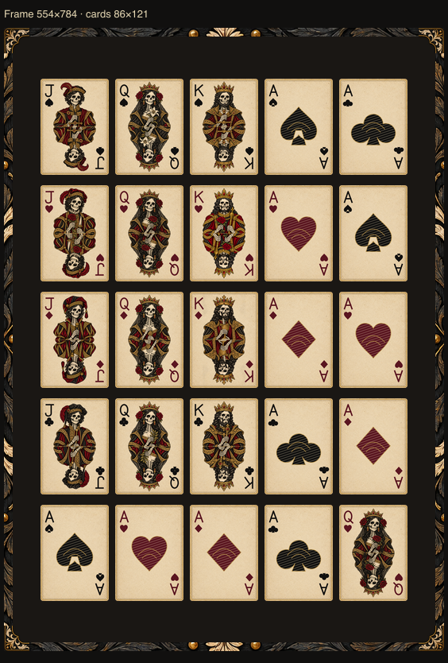
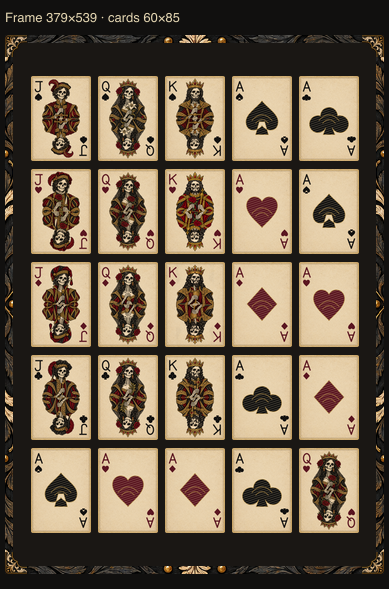

Neutral layout proof using approved Queen A courts and aces. This is art review, not a game result. No new background asset or runtime installation. At 100% zoom, frame and card images remain at their exact displayed dimensions.


STOP for frame approval. Next group: backgrounds.